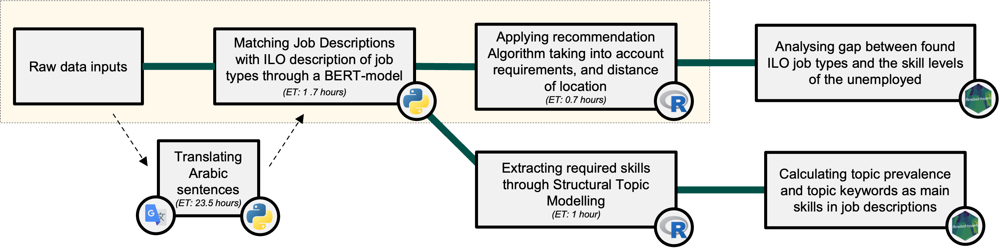

My friend Bálint and I participated in and won the 2022 Global Data Science Competition organized by Whiteshield.
Our task was to build an NLP algorithm that finds the most relevant job advertisements for the registered unemployed.
An effective pairing in the model we put together is based on 3 pillars. The first one is that the field of the individual’s educational background (major) should match the job description. We applied BERT-model (Devlin et al. - 2019) to sort the jobs into ISCO3 categories (like Administration professionals or Software and applications developers) so we can merge the job posts with the possible employees since their major studies are given in the database.

We now created 132 subgroups of the population, but not each job may be relevant for the individuals. We extracted several requirements (with numerous regex filters to identify them) for the jobs from the given descriptions united with the pre-structured information set, such as required degree, experience or age.
But in most cases, we could suggest a bunch of vacancies to an individual so we also calculated the distance between the residence of the possible employee and the possible workplace, and arrange them so that we prefer matches where the distance is shorter (so we also used spatial manipulation functions).
A bonus challenge was to create a visual representation that compares the universe of skills available among the unemployed to the universe of skills required by the job posts. We used here a Structural Topic Model to identify the terms appearing in the description of job categories where the number of vacancies is substantially higher than the number of unemployed (with related majors). The visualisations are presented via Flexdashboard.
References
Devlin, J., M. Chang, K. Lee, et al. (2019). BERT: Pre-training of Deep Bidirectional Transformers for Language Understanding. DOI: 10.48550/arXiv.1810.04805.